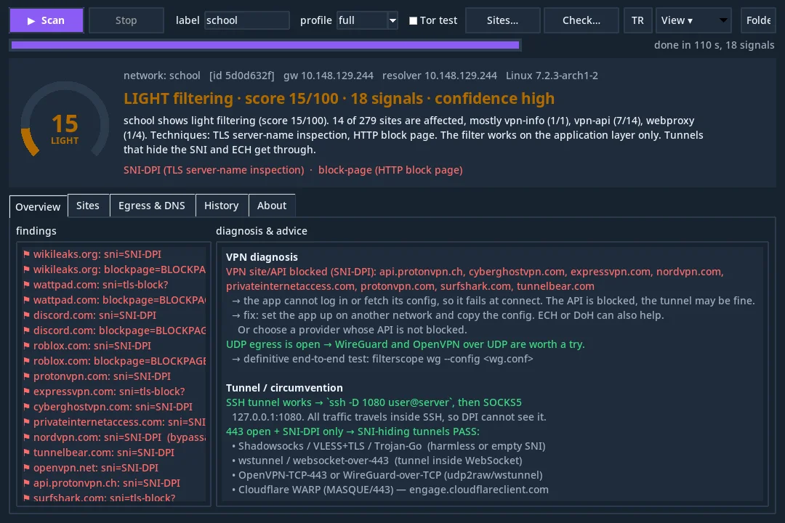
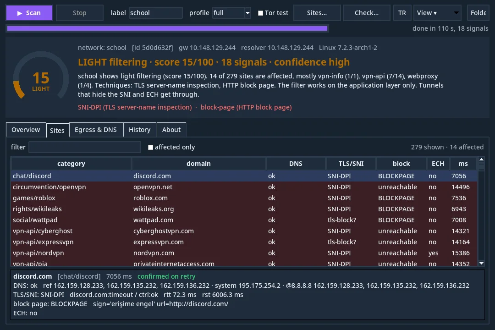
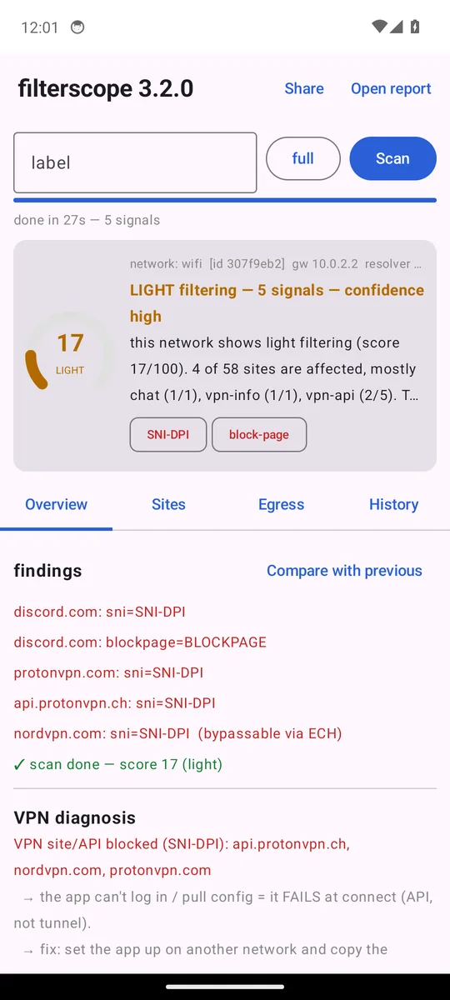

A verdict, not a wall of numbers
Sayı yığını değil, hüküm
Every scan ends with a score from 0 to 100, the techniques the network uses, a vendor guess when a filter appliance leaves its signature, and the exact sites and protocols affected — re-checked once so a flaky connection does not become a false accusation.
Her tarama 0-100 arası bir skor, ağın kullandığı teknikler, filtre cihazı imza bırakıyorsa üretici tahmini ve etkilenen site/protokollerle biter — bağlantı dalgalanması yanlış suçlamaya dönüşmesin diye her bulgu bir kez daha doğrulanır.
What it measures
Ne ölçer
Sixteen probe types over 270+ public, well-known sites — games, streaming, social, messaging, news, education, AI, dev, VPN, web proxies and more. Nothing inappropriate is ever requested — that is a deliberate design choice, so you can run it anywhere without a second thought.
270+ herkese açık, tanınmış site üzerinde on altı ölçüm türü — oyun, yayın, sosyal, mesajlaşma, haber, eğitim, AI, geliştirici, VPN, web proxy ve fazlası. Uygunsuz hiçbir şey istenmez — bilinçli bir tasarım kararı; her yerde gönül rahatlığıyla çalıştırabilirsin.
TLS server-name inspection
TLS sunucu-adı denetimi
Same IP, real name vs. harmless name. Reset only with the real name = the network reads your ClientHello. It even tells whether the reset was injected by a middlebox (faster than a round trip).
Aynı IP, gerçek ad ile zararsız ad. Sadece gerçek adda kopuyorsa ağ ClientHello'nu okuyor demektir. Kopuşun yol üstündeki bir cihazdan enjekte edilip edilmediğini bile söyler (gidiş-dönüşten hızlı).
HTTPS interception
HTTPS'in kırılması
Verified chains for four big sites. A private issuer means the network decrypts HTTPS with its own certificate — every login readable by the operator.
Dört büyük site için doğrulanmış sertifika zinciri. Özel bir imzalayıcı çıkarsa ağ HTTPS'i kendi sertifikasıyla çözüyor — her giriş işletmeci tarafından okunabilir.
DNS tampering & interception
DNS kurcalama ve müdahale
Hijack to a block page, withheld answers, transparent port-53 proxies (a query to an address that cannot answer… answers), NXDOMAIN hijacking, and whether DoH/DoT themselves are blocked.
Engel sayfasına yönlendirme, yutulan cevaplar, port-53'e transparan müdahale (cevap veremeyecek bir adrese sorgu… cevap veriyor), NXDOMAIN kaçırma ve DoH/DoT'un kendisinin engellenip engellenmediği.
Outbound reachability
Dışa erişim
TCP ports used by VPNs and SSH, UDP egress via STUN, and a QUIC version-negotiation probe for HTTP/3 — timeouts mean dropped packets, refusals mean the packet got out.
VPN ve SSH'nin kullandığı TCP portları, STUN ile UDP çıkışı ve HTTP/3 için QUIC sürüm-pazarlığı sondası — zaman aşımı düşürülen paket, red ise paketin çıkabildiği anlamına gelir.
Block pages & appliances
Engel sayfaları ve cihazlar
Signatures of FortiGate, Sophos, Squid, Cisco Umbrella, Lightspeed, Securly, Netsweeper, Palo Alto, Zscaler, BTK/5651 and more; transparent-proxy headers; URL keyword filters tested with benign words.
FortiGate, Sophos, Squid, Cisco Umbrella, Lightspeed, Securly, Netsweeper, Palo Alto, Zscaler, BTK/5651 ve daha fazlasının imzaları; transparan proxy başlıkları; zararsız kelimelerle test edilen URL anahtar-kelime filtreleri.
Ask by name
İsimle sor
“Is Valorant blocked here? Is Discord throttled?” Thirty service profiles — the auth servers, CDNs, game and chat endpoints a service really needs — answered as OK, PARTIAL, BLOCKED or THROTTLED, with reasons.
“Valorant burada engelli mi? Discord kısılıyor mu?” Otuz servis profili — bir servisin gerçekten ihtiyaç duyduğu auth sunucuları, CDN'ler, oyun ve sohbet uç noktaları — OK, KISMEN, ENGELLİ veya KISITLI olarak, nedenleriyle.
Slowed, not blocked
Engellenmemiş, kısılmış
Downloads from five CDNs on the same link. One of them at a quarter of the others = selective throttling — the filter that breaks video and games while everything looks “open”.
Aynı hat üzerinden beş CDN'den indirme. Biri diğerlerinin çeyreğindeyse seçici kısıtlama var — her şey “açık” görünürken videoyu ve oyunu bozan filtre.
Can I get around it?
Aşabilir miyim?
Whether VPN sites and APIs are reachable (why your app fails at login), a real Tor bootstrap, and whether a blocked site publishes ECH — in which case the block is bypassable with a modern browser.
VPN siteleri ve API'leri erişilebilir mi (uygulaman neden girişte takılıyor), gerçek bir Tor bootstrap'i ve engelli sitenin ECH yayınlayıp yayınlamadığı — yayınlıyorsa engel modern bir tarayıcıyla aşılabilir.
How it works
Nasıl çalışır
Scan
Tara
Press the button. 270+ well-known sites in 27 categories and a dozen protocol probes run in parallel; a full scan takes about a minute. Add your own domains too.
Düğmeye bas. 27 kategoride 270+ tanınmış site ve bir düzine protokol sondası paralel koşar; tam tarama yaklaşık bir dakika. Kendi domainlerini de ekleyebilirsin.
Read the verdict
Hükmü oku
Score, level, techniques, vendor signature, affected categories, and what it means for your VPN and your browser.
Skor, seviye, teknikler, üretici imzası, etkilenen kategoriler ve VPN'in ile tarayıcın için ne anlama geldiği.
Keep the evidence
Kanıtı sakla
A self-contained HTML report, JSON for the record, an anonymized version to share, and a history that shows when a block was added or lifted. Scan again on mobile data and diff the two.
Kendi başına açılan HTML rapor, kayıt için JSON, paylaşmak için anonim sürüm ve engelin ne zaman eklenip kaldırıldığını gösteren geçmiş. Mobil veride tekrar tara, ikisini karşılaştır.
Desktop, terminal, phone
Masaüstü, terminal, telefon
The same engine everywhere. A windowed app for people who never want to see a terminal, a live terminal dashboard for people who live in one, and an Android app for the network you are actually standing in.
Her yerde aynı motor. Terminal görmek istemeyenler için pencereli uygulama, terminalde yaşayanlar için canlı pano ve gerçekten içinde durduğun ağ için Android uygulaması.



Downloads
İndir
Latest release:Son sürüm: v3.5.115 (stable) · SHA256SUMS.txt · all releases
| Platform | Platform | File | Dosya | Notes | Not |
|---|---|---|---|---|---|
| Windows | filterscope-<version>-Windows-Installer.exe | Installer. Start-menu shortcut, no admin needed. SmartScreen will warn (unsigned) — “More info → Run anyway”. | Kurulum. Başlat menüsü kısayolu, yönetici gerekmez. SmartScreen uyarır (imzasız) — “Daha fazla bilgi → Yine de çalıştır”. | ||
| Windows portable | filterscope-<version>-Windows-Portable.exe | Single file, double-click. Terminal build: …-Windows-Terminal.exe | Tek dosya, çift tık. Terminal sürümü: …-Windows-Terminal.exe | ||
| Android | filterscope-<version>-Android.apk | Android 7+, 64-bit. Sideload: allow “unknown sources” for your browser once. | Android 7+, 64-bit. Elle kurulum: tarayıcın için “bilinmeyen kaynaklar”a bir kez izin ver. | ||
| Linux | filterscope-<version>-Linux-App | chmod +x then run. Terminal build: …-Linux-Terminal | chmod +x sonra çalıştır. Terminal sürümü: …-Linux-Terminal | ||
| macOS (Apple silicon) | filterscope-<version>-macOS-AppleSilicon.app.zip | Unzip, right-click → Open the first time (unsigned). Intel Macs: Python install below. | Aç, ilk seferde sağ tık → Aç (imzasız). Intel Mac: aşağıdaki Python kurulumu. | ||
| Python 3.10+ | pipx install git+https://github.com/tunnelmoth/filterscope | Any OS. filterscope (TUI), filterscope gui, filterscope scan --html report.html | Her OS. filterscope (TUI), filterscope gui, filterscope scan --html rapor.html |
Verify what you download. Compare the file's SHA-256 with SHA256SUMS.txt from the same release. The binaries are unsigned; the release page and its checksums are the source of truth.
İndirdiğini doğrula. Dosyanın SHA-256'sını aynı sürümdeki SHA256SUMS.txt ile karşılaştır. İkili dosyalar imzasız; gerçek kaynak release sayfası ve sağlama toplamlarıdır.
Questions
Sorular
Is it safe to run at school or work?
Okulda / işte çalıştırmak güvenli mi?
It only connects to well-known public sites (Wikipedia, BBC, GitHub, Signal, Khan Academy, WHO…) and public test endpoints, the way a browser would. It never requests inappropriate content and never tries to break anything — it observes. Whether you are allowed to run software on a given network is a question for that network's rules, not for us.
Yalnızca tanınmış herkese açık sitelere (Wikipedia, BBC, GitHub, Signal, Khan Academy, WHO…) ve herkese açık test uç noktalarına, bir tarayıcı gibi bağlanır. Asla uygunsuz içerik istemez, hiçbir şeyi kırmaya çalışmaz — gözlemler. Bir ağda yazılım çalıştırmaya izinli olup olmadığın o ağın kurallarına bağlıdır.
Does it bypass the filter?
Filtreyi aşıyor mu?
No. It measures and explains. The advice section tells you which kinds of tunnel would or would not work on this network, and the Linux build can drive Cloudflare WARP — but filterscope itself changes nothing on your device or the network.
Hayır. Ölçer ve açıklar. Tavsiye bölümü bu ağda hangi tür tünelin çalışıp çalışmayacağını söyler, Linux sürümü Cloudflare WARP'ı sürebilir — ama filterscope'un kendisi cihazında veya ağda hiçbir şeyi değiştirmez.
What leaves my device?
Cihazımdan ne çıkıyor?
Only the test traffic itself: DNS queries, TLS handshakes and small HTTP requests to the sites in the list, plus one request to 1.1.1.1 to learn your public country and Cloudflare colo. No account, no telemetry, no reporting server. Reports stay in a folder on your device until you share them.
Yalnızca test trafiğinin kendisi: listedeki sitelere DNS sorguları, TLS el sıkışmaları ve küçük HTTP istekleri, artı ülke ve Cloudflare noktanı öğrenmek için 1.1.1.1'e tek istek. Hesap yok, telemetri yok, rapor sunucusu yok. Raporlar sen paylaşana kadar cihazındaki bir klasörde durur.
Why is the Windows build flagged by SmartScreen?
Windows sürümünü SmartScreen neden işaretliyor?
Because it is not code-signed with a paid certificate. Verify the SHA-256 against the release's checksum file, then “More info → Run anyway”. The full source is on GitHub and the binaries are built by GitHub's own CI from that source.
Ücretli bir sertifikayla kod-imzalı olmadığı için. SHA-256'yı sürümün sağlama dosyasıyla doğrula, sonra “Daha fazla bilgi → Yine de çalıştır”. Kaynağın tamamı GitHub'da; ikili dosyaları GitHub'ın kendi CI'ı o kaynaktan derler.
How is the score computed?
Skor nasıl hesaplanıyor?
Share of affected sites (up to 50 points, damped for small scans) + a weight per technique (TLS interception weighs most) + 2 per blocked port, capped at 100. 0 clean · 1-19 light · 20-44 moderate · 45-69 heavy · 70+ severe. Every positive site result is re-tested once; results that do not reproduce are dropped.
Etkilenen site oranı (en fazla 50 puan, küçük taramalarda sönümlü) + teknik başına ağırlık (HTTPS kırma en ağırı) + engelli port başına 2, üst sınır 100. 0 temiz · 1-19 hafif · 20-44 orta · 45-69 ağır · 70+ şiddetli. Pozitif her site sonucu bir kez daha test edilir; tekrar etmeyenler düşer.